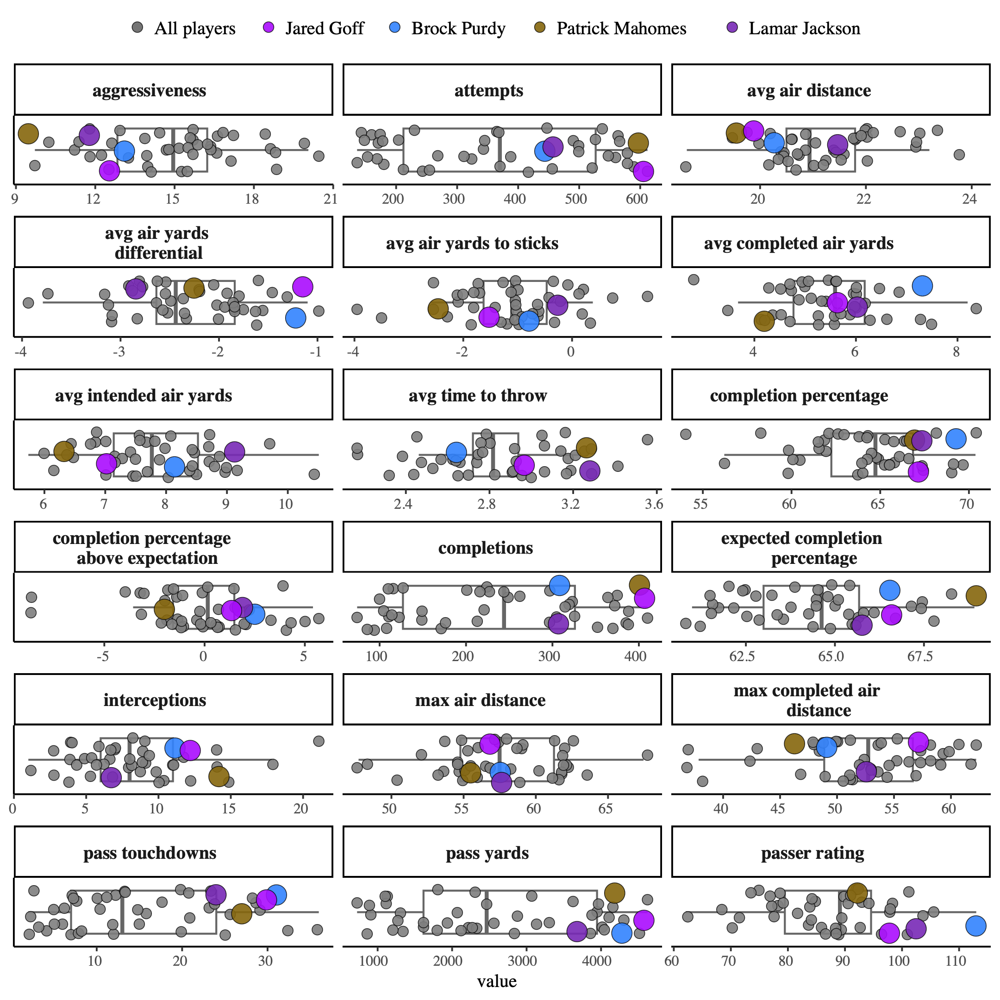
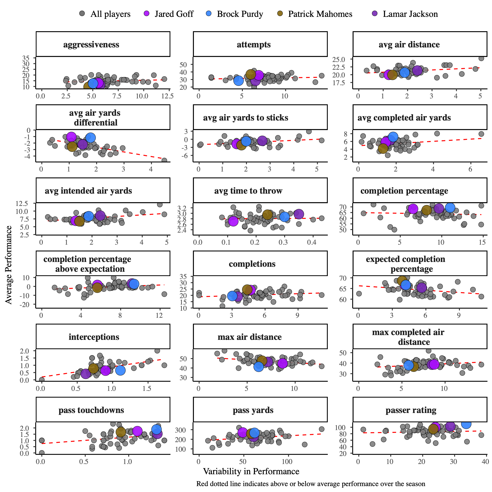

The end of the beginning to a NFL player performance dashboard
A prototype for my new dashboard hobby project, and why all prototypes have an ending
The NFL Data Dashboard Project
My last post outlined the start of my new hobby project: creation of a sports analytics dashboard. There was a fun intersection between me wanting to work on a fun project in a new domain and my brother having keen expertise in Fantasy Football (FF) and the NFL. I set out to learn new techniques in application/software development, which also led to fun discussion on factors contributing to NFL player performance.
Every Dashboard Needs a Prototype
The goal of the dashboard is to display NFL statistics for deciding on winning FF rosters*. A dashboard that exactly reached that goal is highly sought after! Obviously, it would take significant time, resources, and critical evaluation to create such a dashboard, which would challenge even a well-funded company. Additionally, the approach to reaching this goal will change. The potential insights from and interactions with the data in the dashboard change with more understanding of the data and presentation of that data. Therefore, we need a prototype!
The Journey to a Prototype
The prototype we created helped us think about our overall goal*. We wanted to not only directly compare players, but also compare players week by week during the season. We wanted to not only compare players to all others, but think about overall player performance with their variability during the season. After a few football discussions and leveraging key programming techniques, we created the current version of the dashboard that does a pretty good job towards our goal. Below are two graphs displaying performance of QBs (see the dashboard for statistic descriptions):


All Prototypes Serve a Purpose
Similar to Plato’s allegory of the cave*, prototypes are just shadows of the “ideal” dashboard. In my opinion, prototypes have more purpose than shadows because they can lead us to the “ideal” dashboard that reaches our goal. How many prototypes do we need to make to reach our goal? That is the million, possibly billion, dollar question! Luckily, in this fun hobby project, I’ll probably chase a few shadows that get us to ‘good enough’ while balancing fun and the limited time I can work on this.
All Prototypes Have an Ending
The development of this prototype is coming to an end. The prototype helped us move towards the dashboard’s ‘ideal’ goal, but has ultimately led to a new approach we want to explore. What are the trends of players across seasons? Are they lifting off in their career? Are there other data sources, such as of player injuries or contracts, that can yield some interesting insights into pivotal points in player’s careers? The current prototype was not designed for development in this direction, and so developing this prototype has come to an end.
All Prototypes Beget Another Prototype
The ‘death’ of one prototype leading to the ‘birth’ of another prototype is actually quite poetic. And as is often the case, the next prototype is arguably more insightful and impactful than the first. Fortunately, all that was learned when developing the first prototype can be used when developing the next! This strengthens our skills in software/application development just like practicing for a piano recital, or for a Superbowl. For the application/software developers out there, enoy the journey and keep prototyping!